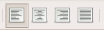

OpenOffice.org 教程之 Writer 文字处理
作者：TeliuTe 来源：基础教程网
三、对齐和格式刷 返回目录 下一课文章当中往往有些特殊的要求，比如标题要在中间，落款在右边等等，我们通过一个练习来学习；
1、对齐
1）启动 Writer，自动打开一个空白文档；
2）输入下列文字：
荷塘月色
月光如流水一般，静静地泻在这一片叶子和花上。薄薄的轻雾浮起在荷塘里。叶子和花仿佛在牛乳中洗过一样；又像笼着轻纱的梦。
朱自清
3）输入完成后，下面来进行格式设置，标题需要居中，最后的作者放在右边，
这些可以用工具栏中的对齐按钮来完成；

4）选中标题“荷塘月色”，然后点一下第二个“居中”按钮，文字就到了中间；
5）选中“朱自清”，然后在旁边找到“右对齐”按钮，点一下；
其他还有“左对齐”、“左右对齐”，在需要的地方可以同样设置；
2、格式刷
上一节我们学习了设置颜色，如果需要设置许多相同的效果，我们可以使用格式刷，用它来复制格式；
1）选中正文中的“月光”，把颜色设为绿色，然后点一下工具栏上的格式刷，
格式刷变成深色，表示处于可用状态，鼠标指针进到工作区里也变成油漆桶图标；
2）在“流水”上拖动鼠标选中它，松开鼠标，发现文字颜色已经变成绿色了；
3）重新选中“流水”，在工具栏中的格式刷上双击（注意是双击左键），这时格式刷就处于锁定状态；
4）分别在各个名词上拖动鼠标：“叶子”、“花”、“轻雾”、“叶子”、“花”、“牛乳”、“轻纱”；
5）然后再在工具栏上点击一下格式刷，解除锁定状态，恢复正常鼠标指针，这样我们就设好了许多相同的格式；
以“对齐和格式刷”为文件名，保存文件到自己的文件夹；
本节学习了文字对齐和格式刷的基本操作，如果你成功地完成了练习，请继续学习下一课内容；本教程由86团学校TeliuTe制作|著作权所有
基础教程网：http://teliute.org
美丽的校园……
转载和引用本站内容，请保留版权信息和本站链接。